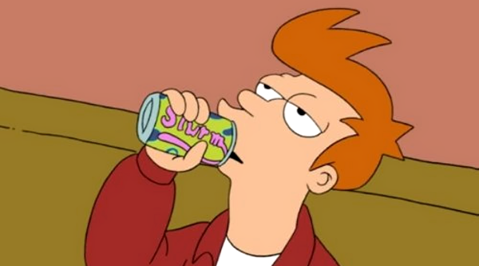

in: Episodes
Fry and the Slurm Factory

| Doctor | Fractal Doctor |
| Companion | Erris |
| Enemy | Slurm Queen |
| Writer | Lewis Morton |
| Director | Ron Hughart |
| Previous | When Aliens Attack |
| Next | I Second That Emotion |
"Those are the Grunka Lunkas! They work here in the Slurm factory!""
― Glurmo
Fry and the Slurm Factory is the thirteenth and final episode in the first season of the American animated television series Futurama. It originally aired on the Fox network in the United States on November 14, 1999.
Story
On December 31, 1999, a pizza delivery man named Philip J. Fry delivers a pizza to Applied Cryogenics in New York City, only to discover that the order was actually a prank call. Dejected and demoralized, he stops in the deserted lab to eat the pizza while outside the whole world is getting ready to celebrate the beginning of New Year, while sitting on a chair. At midnight, Fry loses his balance on the chair and falls into an open cryonic tube and is frozen as it immediately activates. He is defrosted on Tuesday, December 31, 2999, in what is now New New York City. He is taken to a fate assignment officer named Leela, a purple-haired cyclops. To his misfortune, Fry is assigned the computer-determined permanent career of delivery boy, and flees into the city when Leela tries to implant Fry's career chip designating his job. He dodges an attack from Leela, and she falls into the cryonic tube that Fry fell into one thousand years ago. The timer sets itself to one thousand years. Fry escapes from Leela, but reduces the timer to five minutes so that she is not trapped for long.
While trying to track down his only living relative, Professor Farnsworth, Fry befriends a suicidal robot named Bender. As they talk at a bar, Fry learns that Bender too has deserted his job of bending girders for use in constructing suicide booths. Together, they evade Leela and hide in the Head Museum, where they encounter the preserved heads of historical figures. Fry and Bender eventually find themselves underground in the ruins of Old New York.
Leela finally catches Fry, who has become depressed that everyone that he knew and loved is dead, and tells her that he will accept his career as a delivery boy. Leela sympathizes with Fry—she too is alone, and hates her job—so she quits and joins Fry and Bender as job deserters. The three track down Professor Farnsworth, founder of an intergalactic delivery company called Planet Express. With the help of Professor Farnsworth, the three evade the police by launching the Planet Express Ship at the stroke of midnight amid the New Year's fireworks. As the year 3000 begins, Farnsworth hires the three as the crew of his ship. Fry inquires at what his job is, and learns that he will be traveling into space as a delivery boy. Fry, ironically, cheers at his new job, presumably because it will be for a space delivery company.
Cast
Notes
| The Master | Original • |